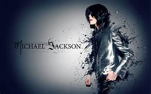

The most well-known pop dancer.
- 1958 - Born Aug. 29 in Gary, Ind he is the seventh child of Joseph and Katherine Esther Jackson.
- 1969 - In Los Angles, the Jackson 5 debut as Motown's newest act. In December , the group's single "I Want You Back" hits No. 1 on the Billboard Top 40 Chart
- 1970 - Jackson 5 hits "ABC", "The Love You Save and "I'Will be there" all reach No. 1 on BillBoard Charts.
- 1972 - First No. 1 solo hit "Ben," a song about a movie rat
- 1974 - Introduces a dance step called the robot on "Soul Train." The Step sweeps the country.
- 1978 -Playe " The Scarecrow" in the movie musical "The Wiz," alongside Diana Ross, richard Pryor and Nipsey Rusell.
- 1979 - Jackson's "Off the Wall" solo album catapults him to superstar status.
- 1982 - "Thriller" is released, eventually selling more than 100 million copies. It makes jackson the biggest pop music star of the decade.
- 1983 - "Beat it" reach no 1 on the chart. The high concept 13 minute "Thriller video, directed by John Landis, becomes a huge sansation."
- 1991 - Releases 'Dangerous' album certified for 7 million in sales
- 1993 - In his first TV interview in 14 years, jackson tells Oprah Winfrey that the change in hisskin complexion is from a disorder called vitligo.
- 1997 - Rowe gives birth to daughter Paris Michel Katherine"
- 2001 - The "invincible " album is released with a respectable 2.1 million copies sold, but only two minor hits..
- 2006 - His House "Neverland Ranch" closed due to financial debts.
- 2009 - Died due to Cardiac Arrest